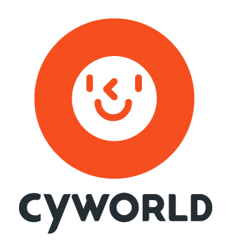

싸이월드 Cyworld
싸이월드(Cyworld)는 대한민국의 소셜 네트워크 서비스로, 개인 가상 공간인 미니홈피를 통해 이용자 간 관계를 맺고 정보를 공유하는 서비스를 제공했다.
최종 업데이트

싸이월드는 어떤 브랜드인가
싸이월드는 대한민국의 소셜 네트워크 서비스로, 페이스북·마이스페이스·Bebo와 유사한 개인 가상 공간 서비스이다. 서비스에 포함된 미니홈피는 하나의 고유명사처럼 쓰일 정도로 영향력이 컸으며, 1촌 관계를 중심으로 한 인간관계망과 미니미, 미니룸, 도토리 등의 요소로 구성되었다.
2000년대 중반부터 후반까지 대한민국에서 가장 높은 대중성을 지닌 SNS로 자리 잡았고, 2004년 한 해에만 1000만 가입자를 달성했으며 2009년에는 가입자 수가 4000만 명에 이르렀다. 2007년에는 미국의 CNN이 싸이월드를 한국의 앞서가는 IT문화 중 하나로 소개하기도 했다.
이후 지배구조와 서비스 개편이 여러 차례 이어지며 부침을 겪었고, 2026년 3월 기준으로는 다시 서비스 중단 상태에 있다.
싸이월드는 어떻게 시작되고 성장했나
싸이월드는 국군기무사 전산병 동료였던 형용준과 정영식이 미국의 매치닷컴을 참고해 한국어 서비스를 구상하면서 시작되었다. 1998년 KAIST 테크노경영대학원에서 결성된 창업 동아리 EBIZ클럽 회원들이 인터넷 관련 공동 창업을 추진했고, 1999년 9월 1일 이들 중 일부가 참여해 '㈜싸이월드'라는 이름으로 법인을 설립했다.
초기에는 형용준과 엔젤투자자의 동생인 정태석이 공동대표를 맡았으나, 2000년 초 형용준이 퇴사한 뒤 2000년 4월부터는 이동형이 단독 대표이사로 회사를 이끌었다. 창업 초기 클럽 중심 서비스는 프리챌·아이러브스쿨·다음 등에 밀려 어려움을 겪었지만, 2001년 미니홈피 프로젝트를 계기로 개인 홈페이지 서비스로 전환하며 인기를 얻었고, 2003년 프리챌의 유료화 선언 이후 이용자가 대거 유입되며 본격적으로 주목받았다.
싸이월드의 브랜드 아이덴티티는 무엇인가
1촌 관계와 미니홈피를 중심으로 한 국내 대중적 SNS로, 미니홈피라는 명칭 자체가 고유명사처럼 쓰일 만큼 2000년대 한국 인터넷 문화를 상징했다.
싸이월드의 대표 제품과 서비스는 무엇인가
싸이월드의 핵심 서비스는 개인 가상 공간인 미니홈피이며, 1촌 관계를 기반으로 한 인간관계망과 함께 미니미, 미니룸, 도토리 같은 요소로 구성되었다. 초기에는 1촌 인맥 서비스와 2촌 기반 직업 검색, 클럽 서비스를 중심으로 시작했으며, 이후 미니홈피 중심 서비스로 전환했다.
2009년에는 포털 네이트와 메인을 통합했고 2012년에는 모바일 앱을 출시하며 모바일 서비스를 강화했다. 2015년에는 미니홈피와 블로그를 합친 '싸이홈'을 선보였고, 2018년에는 방명록·미니미·미니홈피·다이어리 등 옛 서비스를 복원하는 개편을 진행했다.
이후 뉴스 서비스 '큐(QUE)'와 메타버스 공간 '싸이월드 한컴타운' 등을 시도했으나 서비스 중단과 재개를 반복했다.
싸이월드는 지금 어떤 상태인가
싸이월드는 2014년 SK커뮤니케이션즈에서 분리되어 사원주주벤처로 독립했다. 이후 해킹 문제와 데이터베이스 심사 지연 등으로 서비스 재개가 여러 차례 미뤄졌으며, 2021년에는 메타버스 공간 '싸이월드 한컴타운'의 베타 버전만 공개되었다.
2026년 3월 기준 싸이월드는 다시 서비스 중단 상태에 있다.
싸이월드 로고는 어떻게 변해왔나
자주 묻는 질문
싸이월드는 어느 나라 브랜드인가요?
싸이월드는 한국의 기술·전자 브랜드입니다.
싸이월드는 언제 설립되었나요?
싸이월드는 1999년 설립되었습니다.
싸이월드의 브랜드 아이덴티티는 무엇인가요?
1촌 관계와 미니홈피를 중심으로 한 국내 대중적 SNS로, 미니홈피라는 명칭 자체가 고유명사처럼 쓰일 만큼 2000년대 한국 인터넷 문화를 상징했다.
싸이월드의 대표 제품은 무엇인가요?
싸이월드의 핵심 서비스는 개인 가상 공간인 미니홈피이며, 1촌 관계를 기반으로 한 인간관계망과 함께 미니미, 미니룸, 도토리 같은 요소로 구성되었다.
싸이월드는 현재 어떤 상태인가요?
싸이월드는 2014년 SK커뮤니케이션즈에서 분리되어 사원주주벤처로 독립했다.
싸이월드의 본사는 어디에 있나요?
싸이월드의 본사는 서울특별시에 있습니다(위키데이터 기준).
싸이월드의 공식 웹사이트는 어디인가요?
싸이월드의 공식 웹사이트는 http://cyworld.com/ 입니다.
출처와 검증
싸이월드 관련 참고: 공식 웹사이트 · 위키데이터 Q29760 · 한국어 위키백과 · 영어 위키백과. 브랜드명은 한글과 원어를 함께 표기하되 데이터에 없는 표기는 만들지 않습니다. 기원 국가·설립연도는 검수된 정의문에서 확인된 값을 우선하고, 없을 때만 공식 웹사이트 URL이 일치하는 위키데이터 개체의 값을 씁니다. 위키데이터 값은 2026-09-26 기준입니다.